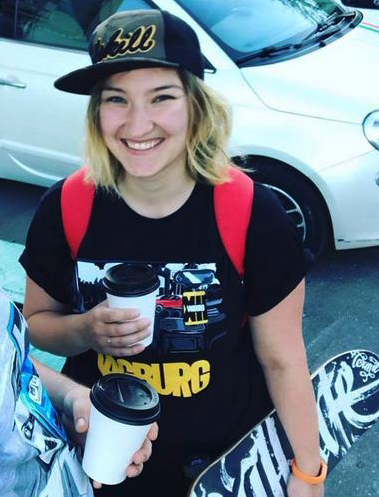

Филиппова Алла, 35 лет, Москва
состою в браке, двое детей
mob/WhatsApp/Telegram: +79169301307
apocatastas@gmail.com
Skype: ms.shadowgirl
Linkedin
Канал в Telegram
Интервью для GetIT
Опыт работы:
ЦППК
Главный специалист по ИТ (C# Developer)
Доработка ПО касс и билетопечатающих автоматов
WSO
Unity C# Developer
Разработка игр для мобильных платформ
Московский Политех
Москва
Программист AR/VR Unity С#
Разработка приложений для лаборатории AR/VR
ALLSUN Integration
Зеленоград
Информационные технологии, системная интеграция
Ведущий менеджер
Ведение проектов по интеграции и доработке продуктов 1С
Webprofy (Kokoc group)
Москва
Информационные технологии, системная интеграция, разработка сайтов
Руководитель проектов
Ведение проектов по разработке сайтов на Битрикс (Scrum), допродажи, работа с клиентами
Oridis
Зеленоград
Информационные технологии, системная интеграция, продвижение сайтов
Менеджер проектов
Ведение проектов по продвижению сайтов, допродажи, работа с клиентами
Работать с недокументированным легаси, паттернами и кодстайлом. Разбираться как с программной, так и с аппаратной частью. Общаться и решать задачи, без лишней траты времени. Нацелена на результат и являюсь евангелистом чётких, выстроенных процессов в команде.
Примеры приложений:
Google Play Market
Apple AppStore
маркер для тестирования навигации
Мастерская геймдизайна, Летняя Школа
Направление "Разработка игр"
Курс дополнительного образования (14 дней)
Итог: основные механики игры типа City Builder (pet-project)
Московский институт электронной техники, Москва
МПиТК, Программное обеспечение вычислительной техники и автоматизированных систем
Магистратура
Тульский Государственный Политехнический Университет, Тула
Факультет кибернетики, Программное обеспечение вычислительной техники и автоматизированных систем
Бакалавриат
ВКР "Применение нейронных сетей в распознавании образов"